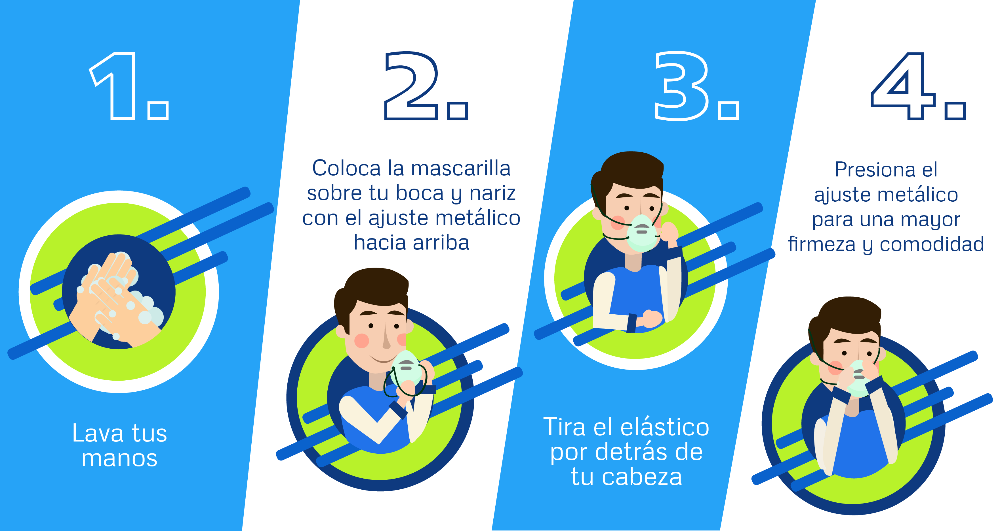
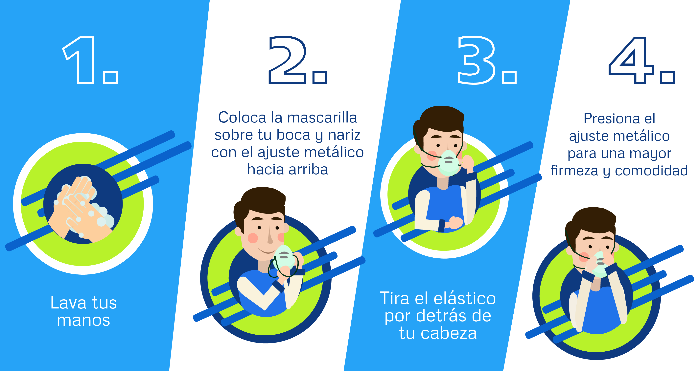
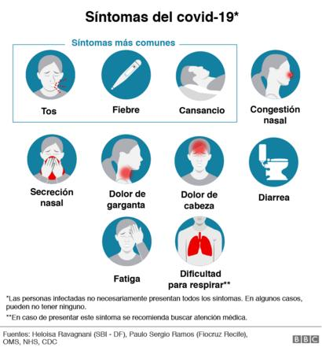
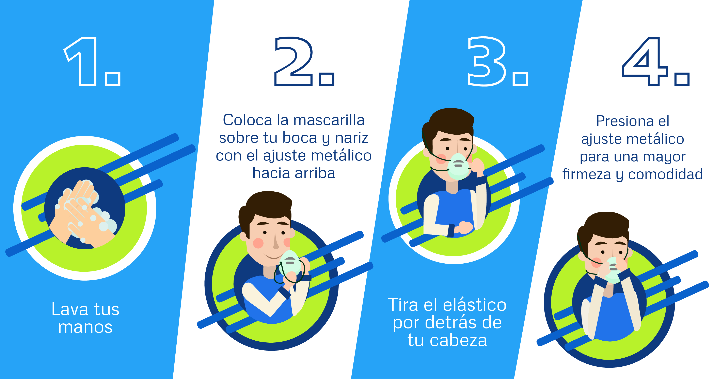

La COVID‑19 es la enfermedad infecciosa causada por el coronavirus que se ha descubierto más recientemente. Tanto este nuevo virus como la enfermedad que provoca eran desconocidos antes de que estallara el brote en Wuhan (China) en diciembre de 2019. Actualmente la COVID‑19 es una pandemia que afecta a muchos países de todo el mundo.
Los síntomas más habituales de la COVID-19 son la fiebre, la tos seca y el cansancio. Otros síntomas menos frecuentes que afectan a algunos pacientes son los dolores y molestias, la congestión nasal, el dolor de cabeza, la conjuntivitis, el dolor de garganta, la diarrea, la pérdida del gusto o el olfato y las erupciones cutáneas o cambios de color en los dedos de las manos o los pies.
Practicar la higiene respiratoria y de las manos es importante en TODO momento y la mejor forma de protegerse a sí mismo y a los demás.
